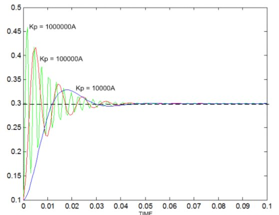
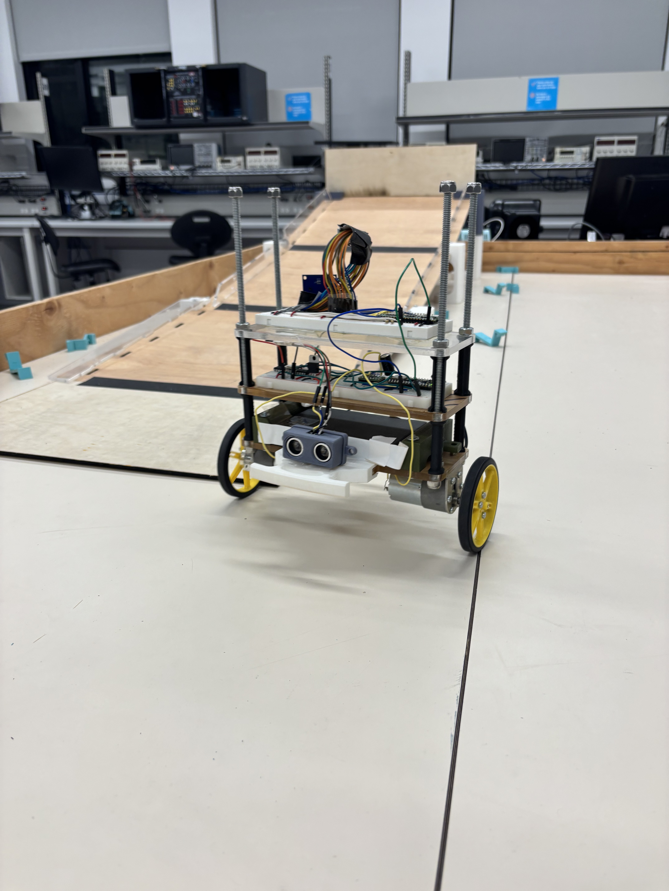
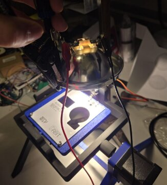
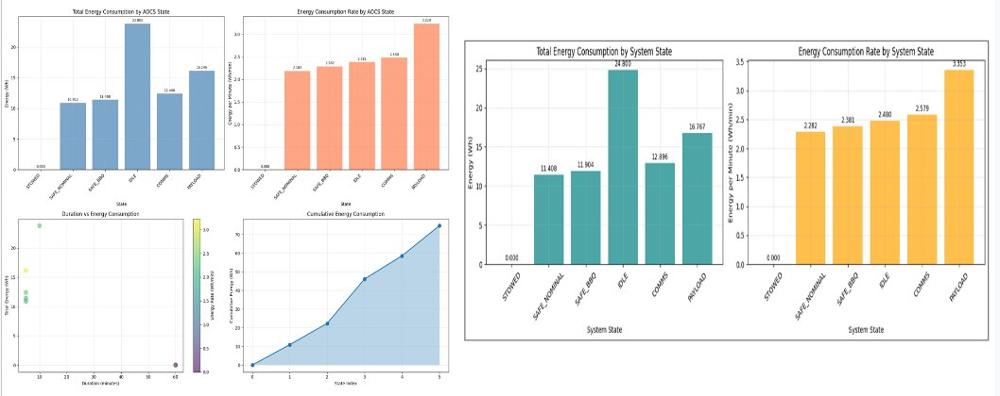

Programming
- SystemVerilog
- Python
- C / C++
- Assembly
- Bash
- MATLAB / Simulink
- HTML
- Racket
Electrical Engineering Portfolio
I design and validate engineering systems at the intersection of embedded firmware, digital hardware, and electrical power analysis.
I am an Electrical Engineering (Co-op) student at the University of British Columbia, where I focus on solving practical engineering problems through a full-stack hardware workflow: architecture, implementation, testing, and technical validation. I am most engaged when a project requires both systems thinking and detailed execution.
My technical interests are embedded systems, digital processor design, and electrical power systems. Across academic, research, and industry work, I have built firmware-driven control platforms, hardware acceleration pipelines, power simulations, and verification tools that improve reliability, performance, and engineering decision quality.
I wanted to build a robotic platform that could maintain dynamic balance on uneven surfaces while still responding naturally to gesture-based operator inputs.
I developed the balancing controller, implemented embedded firmware, integrated obstacle sensing, and tuned the real-time gesture interaction workflow.
Embedded C, PID control, ultrasonic ranging, real-time classification pipeline.
I tuned a PID loop to stabilize a two-wheel platform under slope-induced disturbances, then layered gesture interpretation and autonomous obstacle checks without compromising control loop stability.
The main challenge was preserving reliable balance while introducing asynchronous user commands and sensor-triggered navigation events.
The robot remained stable on slopes up to 30 degrees, achieved obstacle handling at 20 cm range, and reached 92% gesture classification accuracy with sub-150 ms average inference latency.


Software-only DNN inference on embedded hardware had insufficient throughput, so I designed a hardware-oriented accelerator path to improve runtime performance.
I designed the accelerator architecture and optimized arithmetic precision for reliable fixed-point execution.
NIOS II embedded platform, fixed-point Q16.16 arithmetic, hardware-software co-design principles.
I replaced floating-point-heavy operations with Q16.16 numeric pipelines and tuned truncation behavior to preserve inference fidelity through matrix-vector workloads.
Fixed-point arithmetic can quickly introduce cumulative error. I focused on maintaining stable numerical behavior while maximizing throughput gains.
The design achieved a 5x speedup compared with software-only implementations while retaining accurate inference behavior.
I built a synthesizable single-cycle processor subsystem that could execute core ALU instructions with deterministic control.
I implemented the RTL controller and datapath control logic, and I created a full testbench suite for verification.
SystemVerilog, Intel Quartus Prime, ModelSim.
I designed a 52-state control FSM to sequence datapath inputs for four ALU instructions, then validated state transitions and outputs using targeted simulation scenarios.
I needed robust edge-case handling across control transitions and opcode conditions to avoid silent functional mismatches.
I produced 30+ edge and corner-case tests and achieved 95% functional reliability in simulation.
I designed a hardware ARC4 decryption engine for embedded systems where data throughput and efficient communication protocols were critical.
I implemented the baseline decryption architecture and then extended it with parallel processing support.
On-chip memory design, digital logic, ready-enable microprotocol communication.
I built a synchronized decryption pipeline with clear handshaking behavior, then architected a parallel extension to reduce processing bottlenecks.
The challenge was scaling throughput without breaking timing and data integrity guarantees across communication boundaries.
The parallelized design improved key-cracking/decryption throughput by 50% relative to a single-unit implementation.
I develop engineering work packages for electrical, instrumentation, and controls systems, including DCS integrations, PLC configurations, and field device connectivity in industrial energy projects.
I conduct simulations and validation for variable frequency drive (VFD) installations, ensuring compliance, optimal motor performance, and operational reliability.
I spearheaded the development of 10+ engineering work packages for maintenance and replacement of gas plant electrical equipment, translating field realities into practical, safe, and execution-ready documentation.
I conducted power system simulations to validate equipment sizing and load distribution with 95% accuracy, and scoped MCC and motor control assets across five plant zones with annotated single-line diagrams.
I developed Python test suites to verify 32-bit control instructions sent to laser driver computers, ensuring bit-level accuracy for amplitude, phase, and timing parameters. I also implemented automated validation scripts to detect and resolve discrepancies in instruction formatting and transmission, enabling precise real-time laser control in quantum experiments.
I prototyped an 18-channel logic analyzer using a Raspberry Pi Pico W and designed a custom 2-layer KiCad PCB with integrated level shifters and power regulation, achieving reliable PWM signal capture in the 3.22–7.82 kHz range. I cross-validated over 500 signal samples against oscilloscope readings to isolate timing inconsistency and electrical noise artifacts.
I initiated and led development of a full-featured Electrical Power System (EPS) emulator modeling voltage buses, thermal behavior, RBF switching logic, and fault detection to simulate mission-like power conditions ahead of hardware integration.
I programmed a low-earth-orbit simulation model reflecting sun/eclipse cycling and battery degradation effects, increasing EPS predictive accuracy by 60% under mission-like conditions. I also ran multi-phase programmable light tests and coordinated cross-functional integration validation with subsystem teams.


My academic training combines theoretical foundations with project execution across embedded systems, processor design, controls, power analysis, and engineering validation workflows. Through co-op and research work, I apply coursework concepts to real design constraints and measurable engineering outcomes.
Relevant focus areas include digital systems and computer architecture, embedded control, simulation-driven design, signal characterization, and practical electrical infrastructure analysis.